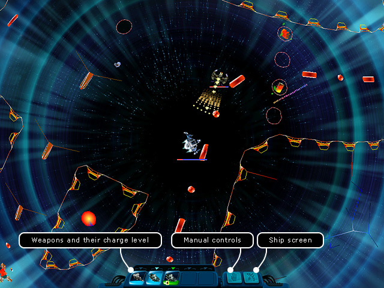

Ranger manual
> Arcade Battle Screen
|
Ranger manual
> Arcade Battle Screen
|
| Arcade Battle Screen All black holes, which develop in the inhabited systems, lead into the hyper-space - a dangerous and mysterious place where its own laws of physics act, and the mind is exposed to a serious challenge. Besides all who risked to fly into a black hole are in for a hard battle with the overwhelming enemy forces. The player will require all its agility and skills to defeat the opponents. In total there are 16 hyper-space maps, and 10 of them have been developed especially for this game. The combat goes in the real-time mode, all controls proceed from the keyboard. To move use the keys Up-Down-Left-Right. To shoot press Ctrl and Shift. If you find the ship controls too complicated, you can enable the autopilot mode by pressing A key - then your spaceship will fly and shoot on its own. However there is no guarantee that such a battle will end with your victory! |

| Each weapon has its own reloading time. As soon as the current weapon unloads, the system will automatically switch to the next one. You can toggle the weapons manually by pressing the buttons from 1 to 5. In the game the Weapons differ by their parameters. Now you are shooting one weapon, a second later you need another one. It's inconvenient to manually toggle between the weapons, as the combat actions go flying. In order to shift the weapons quicker, you can divide them into groups. By default all weapons are ranged into the first group, to fire them press Ctrl key. Right-click a gun to change its group, at that the gun energy visually get painted into a different color. To fire the weapons of the second group press Shift key. If you use two groups, the combat will run effectively. Make use of natural obstacles of the hyper-space more actively. 
If you are killed in action, your relatives will receive condolences and amends, but for you the game will be over. Therefore if you plan to enter a combat, don't forget to save your progress before entering a black hole. How to leave an arcade battle: You have to kill all enemies on this map! There a few maps, which provide an opportunity surrender. After all enemies are defeated, you will see a victory message. All trophies will be automatically transferred into your hold. Press Esc, Space or click the LMB to exit. Arcade bonuses During the battles you will encounter various arcade bonuses, which are able to significantly affect your abilities. The bonuses are represented in form of icons inside of balloons, they become active as soon as you fly over them. All bonuses have their operation time. After you have received a bonus a relevant icon appear at the bottom of the screen and the time indicating the operation time of the bonus (in form of a clock). Take into account that your enemies will also not stand waiting around for you to pick up a bonus and may well beat you to it. There are both positive, and negative bonuses.
Picking up items Being in the hyper-space you can pick up drifting minerals or other items aboard your spaceship, if you have thrown them away before that. Note. After killing all enemies on the map appears an info window with the congratulation text, which you can hide with the help of Tab key. How to pick items up: • fly closer to an item and click it with a mouse; or • fly over an item holding down Alt key. Note After the victory you can pick all items up with the help of the Alt key, otherwise a mouse click will result in your exiting the arcade battle. Note. An item won't be picked up in one of the three cases: 1. It is out of the gripper range. In this case fly closer to the item and make another attempt. 2. There are no free slots in your spaceship. To free some space of unneeded items use the "Ship" (S) button. 3. The power of your gripper is insufficient to pick up such a big item. To make the things right purchase a more powerful gripper. |